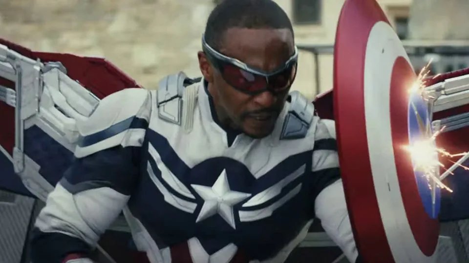

Desde que pendurou seu escudo de Capitão América em Vingadores: Ultimato, há rumores de que Chris Evans retornará ao MCU para interpretar Steve Rogers mais uma vez. É uma sugestão que ele negou várias vezes, alegando que está “felizmente aposentado”. Mas esse é um boato que provavelmente precisará continuar afastando, pois sua persistência é motivada por um detalhe importante: nos quadrinhos, ninguém morre de verdade.
A morte e o renascimento são eventos recorrentes e importantes no mundo dos quadrinhos, e com o Capitão América original não é diferente. O assassinato de Steve Rogers na sequência da história Guerra Civil da Marvel em 2007 foi um momento importante na história moderna dos quadrinhos e resultou em outro evento recorrente nas HQs — a passagem do manto. Nesse caso, foi Bucky Barnes que se tornou o novo Capitão América da Marvel. Mas o cargo, assim como a morte de Steve, seria temporário. É claro que havia uma maneira de trazer Rogers de volta dos mortos. E assim Steve Rogers foi colocado de volta em seu lugar “legítimo”.
Vários anos depois, a Marvel (mais ou menos) fez isso novamente. O soro de super-soldado de Steve foi neutralizado, transformando-o em um idoso fraco, incapaz de carregar o escudo (para não falar em bater nos bandidos). E, dessa vez, foi Sam Wilson, também conhecido como Falcão, que se tornou o novo Capitão América. Foi essa história que preparou o caminho para que o Falcão do MCU, Anthony Mackie, se tornasse a estrela titular de Capitão América: Admirável Mundo Novo.
Mas, apenas alguns anos depois que Wilson se tornou o novo Capitão América nas páginas dos quadrinhos da Marvel, o envelhecimento de Steve foi anulado e ele voltou a usar o escudo mais uma vez. Quando você considera essa história — e histórias semelhantes para personagens como Batman, Homem-Aranha e Lanterna Verde, entre outros — é compreensível que os rumores sobre o retorno de Chris Evans como Steve Rogers persistam. O original sempre volta. Então, a posição vermelha, branca e azul de Anthony Mackie está em perigo, ou ele é o Capitão América permanente do MCU?
“Espero que sim!”, Mackie disse ao IGN em uma entrevista recente antes do lançamento do filme. “Eu não sei. Acho que quando você olha para Sam Wilson, acho que a vida ou a duração dele como Capitão América depende do sucesso do filme. Portanto, vá ver o filme!”.
"Eu acho que, ao fim deste filme, o público sentirá que Sam Wilson é o Capitão América. Ponto final."
Embora Mackie aparentemente não saiba nada sobre o destino de seu personagem, ele tem mais chances de manter o escudo por mais tempo do que Sebastian Stan jamais teria. Embora nos quadrinhos o mandato de Bucky como Capitão América tenha chegado ao fim, o retorno mais recente de Steve Rogers fez com que Steve e Sam concordassem em trabalhar juntos e compartilhar o manto do herói. Ambos têm um escudo. Ambos usam a bandeira. Ambos são o Capitão América. Portanto, mesmo que Chris Evans retorne em Vingadores: Doomsday, em 2026, ou em Avengers: Secret Wars, em 2027, Mackie tem boas chances de manter esse importante título.
Mas outra coisa também deve ser considerada. O MCU não segue as histórias em quadrinhos da Marvel. Desde seu início, em 2008, uma das diferenças mais significativas entre o MCU e sua matriz impressa é um maior senso de permanência. Quando um vilão morre nos filmes, ele (geralmente) permanece morto. Provavelmente não veremos o retorno de Maliketh, Kaecilius ou Ego tão cedo. E, portanto, parece mesmo que Steve Rogers deu seu último adeus.
“Estamos cientes de que, para algumas pessoas, é difícil deixar Steve Rogers para trás”, diz Nate Moore, produtor veterano do MCU e um dos responsáveis por Capitão América: Admirável Mundo Novo. “Nós adoramos Steve Rogers, ele é fantástico. Mas acho que, ao final do filme, o público vai sentir que Sam Wilson é o Capitão América.
Quando perguntado se Anthony Mackie é o Capitão América permanente do MCU, Moore simplesmente diz: “Ele é. E estamos muito felizes por tê-lo”.
Isso está muito claro: a partir do episódio final de Falcão e o Soldado Invernal, o Sam Wilson de Anthony Mackie é o Capitão América do MCU até o dia em que a história do personagem chegar ao fim. Ele não foi criado para ser substituído. Esse senso de permanência dá ao MCU um sabor sutilmente diferente do seu meio de origem: os riscos são maiores. Não há como voltar do pior. Natasha Romanoff está morta. Thanos se foi. Tony Stark não existe mais. E Steve Rogers está... bem, ele está velho demais para isso.
“Quando Tony Stark morre, é uma grande coisa”, diz Julius Onah, diretor de Capitão América: Admirável Mundo Novo. “Como um contador de histórias, você está apenas procurando o melhor playground dramático para seus atores darem vida a esses personagens. Portanto, foi um verdadeiro prazer para mim poder [trabalhar com o papel de Sam] no MCU.”
“Será empolgante ver como ele liderará os Vingadores daqui para frente”, diz Onah, referindo-se ao trabalho mais importante que qualquer pessoa com o título de Capitão América tem que assumir.
Ao instalar um senso de permanência nos filmes, a Marvel pretende evitar a natureza um tanto cíclica dos quadrinhos. O estúdio não quer apenas mais do mesmo. “Acho que [a mudança permanente] faz com que o MCU pareça diferente do que era nas fases um a três”, diz Moore. “Sam é o Capitão América, não Steve Rogers. Ele é uma pessoa diferente. E acho que se você perguntar a Sam quem faria parte dos Vingadores, pode ser um grupo de pessoas diferente do que Steve [sugeriria]".
“Mas acho que são com essas perguntas que nos divertimos também”, acrescenta. “Porque queremos explorar todos os caminhos — assim como nossos fãs — e garantir que, se e quando for a hora certa de os Vingadores voltarem, seja um Vingador diferente, mas que também seja digno do nome Vingadores”.
Com tantos Vingadores originais agora fora de ação, será interessante ver como o próximo grande evento do MCU será diferente dos anos de Guerra Infinita/Ultimato, amplamente considerados como o auge da produção da Marvel Studios. Mas a única coisa que sabemos é que Anthony Mackie estará à frente e no centro, liderando os Vingadores como o único Capitão América. Por que a Marvel nunca ocultou a verdade propositalmente e depois fez algum tipo de truque de elenco, não é mesmo?